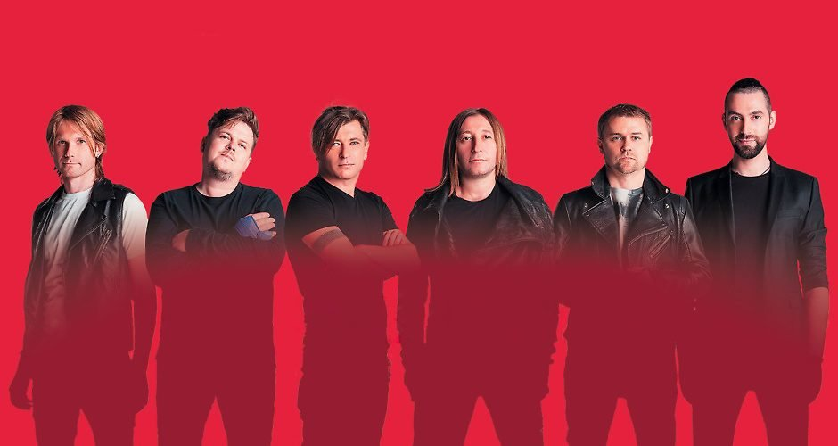

История создания
«Би-2» – группа из России, основанная в 1988 году Александром Уманом и Егором Бортником в Бобруйске. Известность к коллективу пришла в 1999 году, к тому времени музыканты успели пожить и поработать в Израиле и Австралии. Сегодня команда является одной из наиболее успешных в России, регулярно выпускает студийные альбомы и сайд-проекты, активно гастролирует. Некоторые пластинки коллектива имеют золотой статус.
Участники группы
- Лёва Би-2 – вокал, акустическая гитара, перкуссия, доп. Электрогитара
- Шура Би-2 – соло-гитара, вокал, бас-гитара
- Андрей «Звонок» Звонков – гитара
- Максим «Лакмус» Андрющенко – бас-гитара
- Борис Лифшиц – ударные
- Яник Николенко – флейта, клавишные, бубен, бэк-вокал
Ссылки